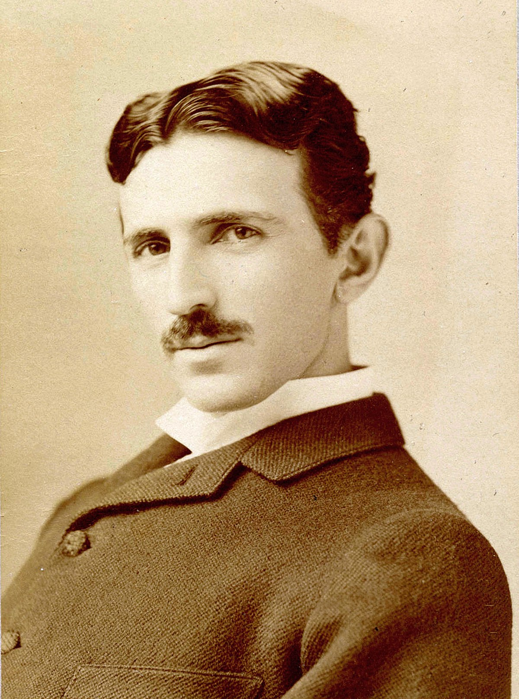

Thomas Alva Edison (Corriente continua)
 Thomas Alva Edison (Milan, Ohio; 11 de febrero de 1847-West Orange, Nueva Jersey; 18 de octubre de
1931) fue un inventor, científico y empresario estadounidense. Desarrolló muchos dispositivos
que han tenido gran influencia en todo el mundo, como el fonógrafo, la cámara de cine o una duradera
bombilla incandescente. Apodado «El mago de Menlo Park», Edison fue uno de los primeros inventores
en aplicar los principios de la producción en cadena y el trabajo en equipo a gran escala al proceso
de invención, motivos por los cuales se le reconoce la creación del primer laboratorio de
investigación industrial.
Edison fue un inventor prolífico que registró 1093 patentes a su nombre en Estados Unidos, además de
otras en Reino Unido, Francia y Alemania. Pero más importante que sus muchas patentes fue el amplio
impacto que tuvieron algunas de sus invenciones: la luz eléctrica y el suministro público de
electricidad, la grabación de sonido y la cinematografía se convirtieron en nuevas y poderosas
industrias en todo el mundo. Sus inventos contribuyeron en particular a las telecomunicaciones, como
una máquina de voto, una batería para un automóvil eléctrico, la energía eléctrica, la grabación de
música y las películas. Sus avanzados trabajos en estos campos no fueron más que una continuación de
su primer trabajo como radiotelegrafista. Edison desarrolló un sistema de generación y distribución
de energía eléctrica a las casas, negocios y fábricas, un avance crucial para el mundo
industrializado moderno.
Thomas Alva Edison (Milan, Ohio; 11 de febrero de 1847-West Orange, Nueva Jersey; 18 de octubre de
1931) fue un inventor, científico y empresario estadounidense. Desarrolló muchos dispositivos
que han tenido gran influencia en todo el mundo, como el fonógrafo, la cámara de cine o una duradera
bombilla incandescente. Apodado «El mago de Menlo Park», Edison fue uno de los primeros inventores
en aplicar los principios de la producción en cadena y el trabajo en equipo a gran escala al proceso
de invención, motivos por los cuales se le reconoce la creación del primer laboratorio de
investigación industrial.
Edison fue un inventor prolífico que registró 1093 patentes a su nombre en Estados Unidos, además de
otras en Reino Unido, Francia y Alemania. Pero más importante que sus muchas patentes fue el amplio
impacto que tuvieron algunas de sus invenciones: la luz eléctrica y el suministro público de
electricidad, la grabación de sonido y la cinematografía se convirtieron en nuevas y poderosas
industrias en todo el mundo. Sus inventos contribuyeron en particular a las telecomunicaciones, como
una máquina de voto, una batería para un automóvil eléctrico, la energía eléctrica, la grabación de
música y las películas. Sus avanzados trabajos en estos campos no fueron más que una continuación de
su primer trabajo como radiotelegrafista. Edison desarrolló un sistema de generación y distribución
de energía eléctrica a las casas, negocios y fábricas, un avance crucial para el mundo
industrializado moderno.
Nikola Tesla (Corriente alterla)

Nikola Tesla ( Imperio austríaco, actual Croacia; 10 de julio de
1856-Nueva York, 7 de enero de 1943) fue un inventor, ingeniero eléctrico, ingeniero mecánico y
físico estadounidense de origen serbocroata. Se le conoce sobre todo por sus numerosas
invenciones en el campo del electromagnetismo, desarrolladas a finales del siglo XIX y principios
del siglo XX. Las patentes de Tesla y su trabajo teórico ayudaron a forjar las bases de los sistemas
modernos para el uso de la energía eléctrica por corriente alterna (CA), incluyendo el sistema
polifásico de distribución eléctrica y el motor de corriente alterna, que contribuyeron al
surgimiento de la Segunda Revolución Industrial
Su carácter, su enfrentamiento con Edison y el halo de misterio que rodea a algunos de sus
descubrimientos, hicieron que Tesla se convirtiera en un científico muy popular a partir de la
década de 1990, con una abundante bibliografía disponible acerca de su vida y de su obra.
Corriente continua o DC
En la naturaleza, la electricidad es relativamente rara si se compara con lo cotidiana que es en
nuestra vida, sólo es generada por algunos animales y en algunos fenómenos naturales como los rayos.
En la búsqueda de generar un flujo de electrones artificial, los científicos se dieron cuenta de que
un campo magnético podía provocar el flujo de electrones a través de un cable metálico u otro
material conductor, pero en un solo sentido, pues los electrones son repelidos por un polo del campo
magnético y atraídos por el otro.
Así nacieron las primeras baterías y generadores de corriente eléctrica continua, un invento
principalmente atribuido a Thomas Edison en el siglo XIX, el mismo sobre el que se debate si inventó
o no la bombilla.
Corriente alterna o AC
A finales del siglo XIX, otro científico, Nikola Tesla, trabajó en el desarrollo de la corriente
alterna buscando sobre todo poder transportar mayores cantidades de energía eléctrica y a mayor
distancia, algo que es muy limitado con la corriente continua.
En lugar de aplicar magnetismo forma uniforme y constante, Tesla utilizó un campo magnético
rotatorio. Cuando cambia la posición de los polos, también cambia el sentido del flujo de
electrones. Se produce así la corriente alterna.
El cambio de sentido en el flujo de electrones se conoce como frecuencia y se mide en hercios (Hz),
unidad que es igual a ciclos por segundo. Esto quiere decir que en una corriente alterna de 60 Hz se
producen 60 ciclos por segundo.
En un ciclo, los electrones cambian el sentido y vuelven al sentido original, es decir, se dan dos
cambios de sentido por ciclo. En una corriente alterna de 60 Hz, por tanto, el flujo de electrones
cambia de sentido 120 veces por segundo.
La corriente alterna permite, entre otras muchas cosas, que se pueda conectar un dispositivo a un
enchufe sin importar donde esté el polo positivo y el negativo del enchufe.
Sin embargo, en la corriente continua, las conexiones tienen que colocar siempre el polo positivo y
el negativo en una posición concreta.
Otra gran diferencia entre la corriente AC y DC es la cantidad de energía que se puede transportar
en cada tipo. La electricidad no puede viajar muy lejos antes de que empiece a perder voltaje
(medida de la tensión eléctrica).
Cada batería está diseñada para producir corriente continua con un cierto nivel de voltaje, así que
desde el momento de la producción de la electricidad, ya está predeterminada la distancia a la que
se puede transportar a través del cableado.
La corriente alterna, sin embargo, se puede producir en un generador y utilizar un transformador
para subir o bajar la tensión de salida según las necesidades, lo que permite el transporte a una
distancia mucho mayor.